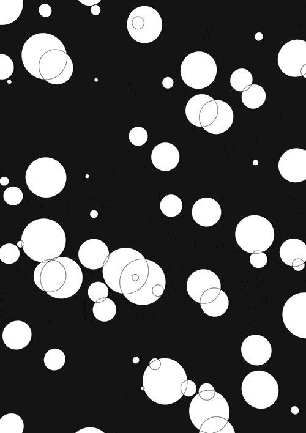
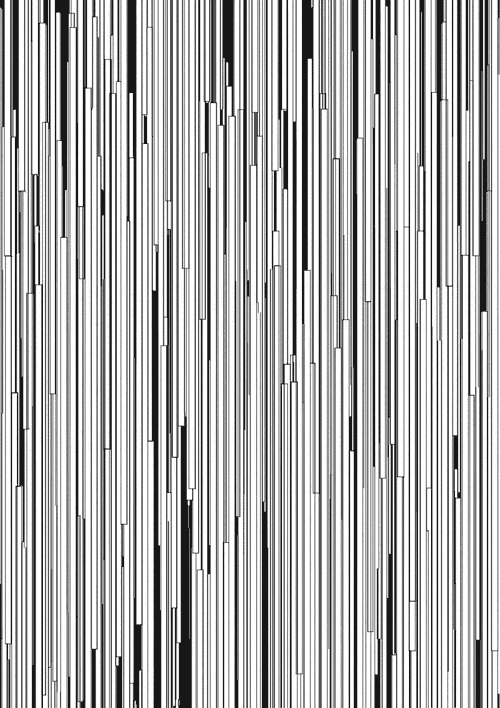
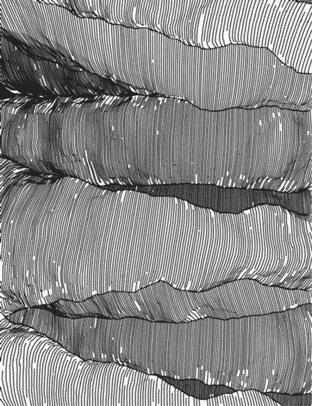

CIDEr Script

Powered by Natural Language
CIDEr is a natural language based syntax model that is totally logically distributed and can be easily modified to suit the developer's preferences. Embedding CIDEr into program code efficiently handles most of the cumbersome syntaxes and rather unfamiliar nomenclature.
Automata
CIDEr, when embedded, automatically completes any predictable code it may have
learnt through it's due time observing your coding patterns. Further, all
of the constructs it has created can be simultaneously compiled
along with
the generic language nomenclature thanks to it's artificially intelligent
two-pass assembler.
Self Indentation Wrap
CIDEr has a built-in self indentation wrap that is essential for it's assembler to probe through the depths of the program. You won't need to do anything manually, since the wrapper adjusts itself.
Duality
CIDEr can process dynamic-construction of constructs on the go, not
getting interrupted by the generic program syntax. It's script
handler is capable of machine learning and possesses the capability
to assemble both itself and the underlying program
, seamlessly integrating both of them.
Language Conversion
CIDEr is capable of converting most of the programs into AGI analysed pseudo code in form of natural language, which it uses to convert the program in the source language to a destination language, making this our flagship model.

Universal Program Structure
The translated pseudo-like code is understandable by various compiler listeners powered by CIDEr that is embedded into the compilers and environments using CIDEr. These are easily customisable , and can be done so dynamically too.Customisation Tool
CIDEr can help you customise clauses and syntax of one language to fit to your needs as per your requirement. Notwithstanding the customisation, CIDEr makes sure that the integrity of the language is not compromised.CDE Developer's Kit

Simultaneous Code Execution
The CDE Kit is based on our CIDEr Script Model that enables Simultaneous Code Execution, enabling multiple source codes across various dialects to be compiled at once. This is achieved through CIDE, our Cascade-based IDE.
Multilink
CDE has the capability to link multiple compatible libraries across various languages
allowing for seamless connection of multiple libraries, packages and API's into one
composite program module. CDE's compiler listeners provide real time output and console
logs as the program is being written.
Mulitilateral Interaction
CDE's CIDEr backed TPA (Two Pass Assembler) acts as a dynamic request-response dynamo.
The built-in multithread observers help divide extensive workloads into more modular
partitions, also interacting with the compiler to reduce redundancy.

Bottleneck Detection
CDE comes installed with our advanced CPVAS (Cascaded Program Vitals Analysis and Screening) system which helps detect bottlenecks in the code, all of which are communicated through embedded interfaces, such as IDE based dialogs, alerts, etc.
Complexity Analysis
CDE uses its CPVAS system to analyse the program and suggest changes as required through its NLCUI
(Natural Language Cascaded User Interface). It also responds to requests queried through the user
terminal.

Intelligent Suggestions
Utilizes an AI-based dialect dictionary (Toucan) to suggest code changes and optimizations, and identifies bugs and bottlenecks using its Interactive Bug Probing Extermination Model (IBPEM).
Learner
The CDE Kit learns from its observations throughout program development. It maintains
comprehensive history logs of the progress of targeted projects and applications which
can be fetched using appropriate interface, NLCUI being the most supported.
CLE Learner's Kit
Learner Developer Modules (LDMs)
These modules within CLE offer essential documentation and builders, serving as an interface for the learning environment. These can be accessed through the in-built NLCUI or any suportable IDE/VM as an extension (About).
Education Edition Natural Language Models (EDENLMs)
These are plugins and models exclusively available in CLE, capable of being embedded into compatible
IDEs and VMs, catering to learner preferences. These help the learner grasp the basics of programming,
equipping them with necessary tools.
CLE/Toucan:: DEMO➤
>> need help with Array.prototype.map()
>> need help with Array.prototype.map()

Extermination
CLE incorporates its multithreading model - the IBPEM, which efficiently identifies potential threats, bugs, bottlenecks, and loopholes in program flow, ensuring quick and clean extermination.
Sprinting
CLE offers the ability to conduct dry runs and analyze limiting cases for programs fed
through the NLCUI (Natural Language Cascaded User Interface).
CLE/Toucan:: DEMO➤
>> just find bugs and sprint over the following code: JS>> define tan(x, n = 10):: while x:gt:2 * PI do step x-=2 * PI; while x:lt:-2 * PI do step x+=2 * PI; result = term = x; let sign = -1; for (let i = 1; i < n; i++) { term *= (x * x);term /= (2 * i + 1);result += sign * term; sign *= -1; window.onload() = function () {alert(tan(2))};
>> just find bugs and sprint over the following code: JS>> define tan(x, n = 10):: while x:gt:2 * PI do step x-=2 * PI; while x:lt:-2 * PI do step x+=2 * PI; result = term = x; let sign = -1; for (let i = 1; i < n; i++) { term *= (x * x);term /= (2 * i + 1);result += sign * term; sign *= -1; window.onload() = function () {alert(tan(2))};
CSTe Tester's Kit
CSTe is still under development, but has prototypes available here.
Endurance Testing
CSTe is expected to generate load, stress, and endurance tests based on the project it is integrated with, helping testers evaluate system performance under various scenarios. It is a classified stressor that exploits any detected bottlenecks and limitations to generate stress.
Monitor
This API is anticipated to monitor resource usage and provide performance metrics and reports, enabling
identification of bottlenecks and optimization of system-software dynamics and interactions. Observer
CSTe will support testing to ensure that recent code changes or updates have not
introduced new defects or unintended side effects.
CSTe:: DEMO➤
>> $observer-stressor::D:/Downloads/testApplication.exe: endurance grow-less
>> $observer-stressor::D:/Downloads/testApplication.exe: endurance grow-less
CSTe is still under development, but has prototypes available here.